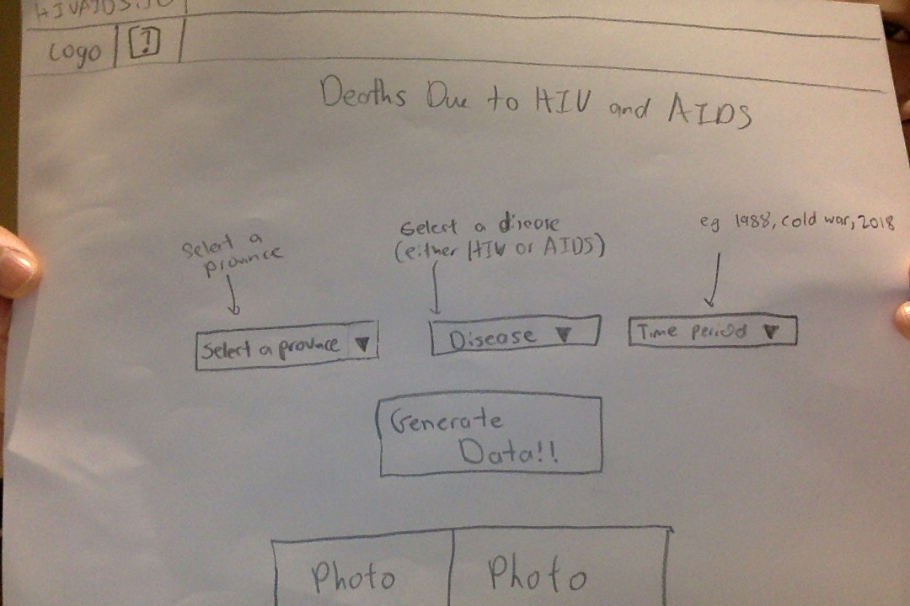
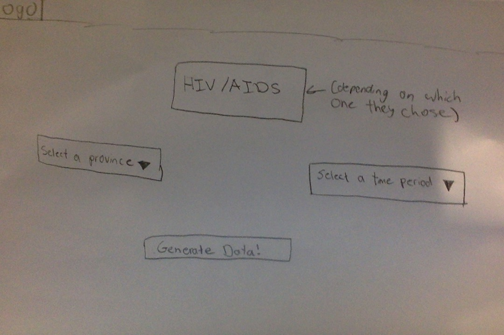
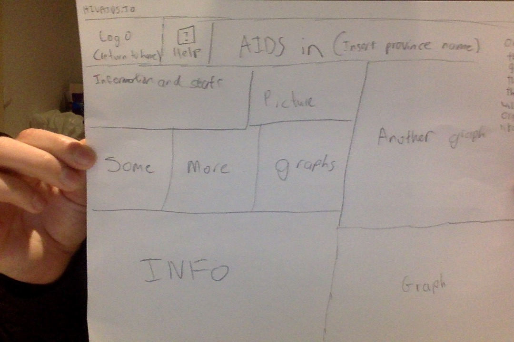

There are some essential factors that make a website good, including some ergonomic factors such as navigation, easy access to help, and aesthetics to make the user enjoy their experience.
Success Criteria:Some designs that I have chosen include one that is built around a dropdown design. This is simple and will not cause confusion. Instead, it is straight to the point, so that if older users go on the website, there is no explanation needed. As you can see in this design, it is very easy to navigate around the website to see the statistics, to find help for navigating aroud the website, or to just get information on the topics of diseases as well as HIV and AIDS. The advantages of this website are that is is very easy to navigate around. This is so the user will not click off the page or anything like that due to the complication of trying to find where things are One website that is comparable to this one would be population.io.
Some pros again, include the easy way of navigating through the website. When I was analyzing different websites, I found that I liked the ones that were easier to naviagate in, particularly because I am impatient. Some cons incldude the lack of aesthetics and organization. Aesthetics and organiztion are just as important as easy navigation. Also, it will be harder to transfer the data into a way that is not JSON data, such as graphs and tabels
Another design that I have includes a homepage, that has one button that gives information about HIV, and the other one is about AIDS. Once you click these buttons, the information for each country will be more focused. That way, the user will not be consfused on whether you are trying to look for information about HIV or AIDS. Once clicking in one of the sections, the next screen will be a similar design to #1. However, instead of having 3 dropdowns, there will just be 2, since in the homepage, the user chose whether they wanted to see HIV or AIDS.
This is the homepage
After the user clicks on either HIV or AIDS, they will be directed to this page where they will choose the continent and time period of which they want data or information on. Then, they will click "Generate Data"
Once the user clicks "Generate Data", they will be directed to this page. This will be the general layout.
The design that I chose was the second one, where the HIV and AIDS sections are split. This is because I think there is still a way of maintaing organization, easy navigation, and good aesthetics all in one page. The second design fits exacly that. Also, I feel that this design is much easier because as a coder, it is much easier to know what you are doing, and to sort your code into buttons and folders.
After these two stages of code, I then moved on to the organization and aesthetics of the website.